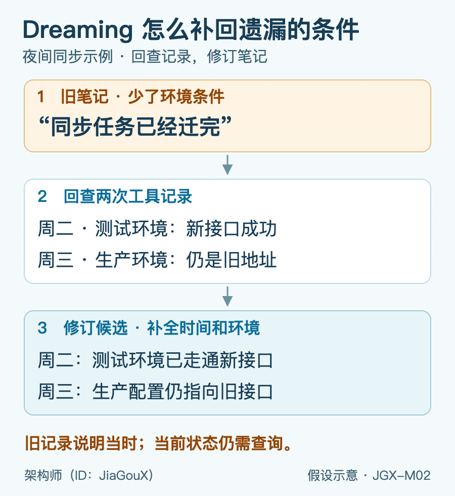
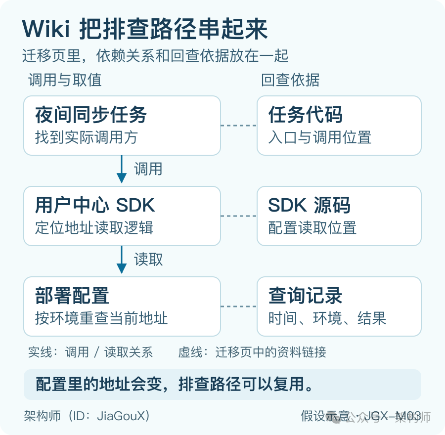

Claude 的4层记忆是如何设计的？
架构师（JiaGouX）
我们都是架构师！ 架构未来，你来不来？
昨天让 Claude 把一条调用链摸得清清楚楚，今天换个会话再问，如果没有留下可用的记忆，它又得从头查一遍。一次会话里查清楚了，下一次怎么接着用？
11 月 6 日，Anthropic 发了一篇研究，专门聊这件事：任务做完之后，Claude 能留下什么给下一次用。研究用四层来解释这套记忆设计：
1. 会话记录：留下原始经过，查了什么、工具回了什么，都在里面。
2. 笔记：把值得再用的发现摘出来。
3. Wiki：把几次会话里的线索整理成互相链接的页面。
4. 启动上下文：开工时先看到的那几行提示。
任务做完之后，还可以另跑一轮，让 Claude 翻旧记录、改掉写错的笔记、合并重复的内容。这轮整理叫 Dreaming，也就是前几天聊过的“做梦”。
太长不看
- Dreaming 能回看记录、修正笔记。
周二只在测试环境跑通，笔记却写了“迁移完成”；翻回当天的工具记录，就能核对漏掉的环境。
- Wiki 适合串散在各处的线索。
任务、SDK、配置各记了一段，下次从任务名就能一路查到配置。
- 新会话开工，先读短索引。
笔记写得再好，也得给下一次留个找得到的入口。
- 用同一个问题，检查记忆有没有帮上忙。
分别试不带笔记、带上笔记，再改一次测试配置，看它能否沿着笔记找到新值。
四层记忆
拿个后端常见的例子：假设让 Claude 查一个夜间用户数据同步任务，它翻了任务代码，又查了用户中心 SDK 和部署配置。哪些东西值得带到下次？
- 会话记录
里有每一步怎么查、工具回了什么。后来要核对“那次查的到底是测试还是生产”，翻回当时的记录就行。
- 笔记
留一句真正用得上的发现，比如“同步接口的地址由用户中心 SDK 从部署配置里读”。下次再查，可以少翻好几个文件。
- Wiki
把几次排查串起来。一次会话找到了夜间任务，另一次查到了 SDK 读哪份配置，把这些发现链接起来，下次就能接着查。
- 启动上下文
只带开工时要看的几句，比如“查夜间同步，先翻迁移笔记”。具体查到了什么，用到再打开。
在这个例子里，值得反复用的是那条“从任务代码一路查到配置”的路径。某天读出来的具体地址，也可以连同日期和环境留下，方便以后对照变化。下次再问“现在的同步地址是什么”，顺着这条路径重查，省下的是重新摸清依赖关系的功夫。
图 1：记忆怎么接力
这里的“记忆”，指留在会话外、供以后读取的上下文，不动模型权重。自己搭 Agent 时，这几层可以先用一组文件来组织，分别保存原始记录、笔记、Wiki 页面和启动索引。Dreaming 负责回看和整理这些内容；至于文件怎么读、整理好的记忆怎么交给下一次会话，Claude Code 和 Managed Agents 各有各的做法。
Dreaming 纠错
还是夜间同步。假设周二，Claude 在测试环境跑通了新接口，顺手记了一句“同步任务已经迁完”。周三换了个会话，一查生产配置，夜间任务还指着旧接口。两次查到的东西都对，坏就坏在周二那条笔记漏了“测试环境”四个字，下一次读起来就完全是另一回事了。
让 Dreaming 把这两次会话翻出来对一对：周二的工具结果显示，新接口在测试环境返回成功；周三查的生产配置里，填的还是旧地址。笔记就可以改成两句：
周二，测试环境走通了新接口。周三查生产配置，夜间同步任务仍指向旧接口。

图 2：Dreaming 怎么补回遗漏的条件（示意：遗漏的环境条件，可以从原始工具记录中补回）
前几天写月见山，看到的其实就是这个过程。Claude 把宝可梦中心记到了山洞另一侧，Anthropic 让它回看原始会话，把位置改了回来。换上改过的笔记再跑，它回去找到洞口，走到了华蓝市。
写这篇研究的 Lance Martin 在 X 上把 Dreaming 描述为一轮离线计算：回看经历，纠错、记笔记、重新组织记忆。不过，旧记录能帮它核对的是当时发生了什么。周三之后生产有没有切换，还得重新查。
当场记下的线索，后面的步骤就能读到，但写笔记也会分走当前任务的注意力。Dreaming 把回看和重组放到任务之外，可以对照多次会话；这轮整理需要额外的计算，结果也不一定马上进入正在进行的会话。
笔记能改回来，靠的是当时查过的东西还找得到。 Claude Code 会按期限清理本地会话，自动记忆文件不随这次清理删除。过几个月要是只剩一句“已经迁完”，就很难知道当时查的是哪儿了。日期、环境和配置位置能帮下一次继续查；要核对当时的具体结果，还得保留相应的证据。
Wiki 串起线索
笔记改对了，任务、SDK 和配置之间的关系还得串起来。在这个例子里，接口地址写在部署配置中，夜间任务通过用户中心 SDK 调用它。只搜旧地址，可能找得到配置，却看不出哪个任务在用它。线索散在三处，Wiki 可以把这条关系写在同一页。
迁移页里可以有这么一行：
夜间同步任务调用用户中心 SDK，SDK 从部署配置读同步地址。核对生产切换时，看定时任务实际加载的配置。

图 3：Wiki 把排查路径串起来（示意：从任务名进入，也能顺着迁移页找到配置及其查询记录）
任务名、SDK 和配置各自链接回原来的记录。下次从“同步任务报错了”这头查起，也能找到接口那头。要是只想问某个环境变量在哪儿，直接搜代码可能更快。同一条调用链查得越频繁，越值得提前理清。
4 月聊 Karpathy 的 LLM Wiki 时，我们关注的就是这层长期维护的页面：把反复查到的关系留下来，还能顺着链接回到原始资料。这次 Anthropic 进一步给出了评估数字。
他们拿 Stainless 的约 35 万份内部文件出了 25 道题，让 Claude 用几种查法作答。Wiki 是用 128 个会话建起来的。单翻 Wiki，满足了 48% 的评分项；单用搜索，53%；两样一起用，到了 61%，而且跟单用搜索比，每题还少用了约 2 万 token。
这 48% 是逐步整理出来的：构建 Wiki 的会话从 2 个增加到 128 个，单用 Wiki 作答时，评分项满足比例从 13% 提高到 48%。这里省的是答题时翻资料的开销，建 Wiki 花掉的那 128 个会话，得另算。
Anthropic 还拿法律文档做了对照：需要跨几份文件拼信息的题，Wiki 帮助明显；答案主要在单份文件里的那组任务，Wiki 没显出优势。放到我们的例子里，要不要建页，就看任务、SDK 和配置这几段关系，后面会不会反复用到。
多个 Agent 一起写时，页面怎么分也有影响。Anthropic 还做了一组合同实验：多个 Agent 往同一张表里写，互相覆盖，加上摘要漏了条款，最后简报只覆盖了 57 项事实中的 41 项。后来改成每份合同单独建页、交给一个 Agent 写、条款保留原文，57 项全保住了。页面分工和条款保留方式是一起改的，各自帮了多少，这组实验分不开。
合同需要保留逐字条款，接口迁移需要保留环境、配置位置和依赖关系。页面留到多细，取决于下次要拿它回答什么。放回同步任务，调用方和服务端各留一份查过的记录，迁移页链接到这些记录，后续就能分别核对双方的进度。
新会话怎么读
写完迁移页，还得让 Claude 下次知道去哪儿翻。索引上只写“同步迁移”，碰到一句“夜间同步怎么又报错了”，它未必想得到是同一件事。索引里要用平时提问会用的名字，比如“夜间同步、用户中心 SDK，见 sync-migration.md”。周三查到的地址放在页里，用到再翻。
启动时先给索引，可以让 Claude 在还没想好搜什么时，就知道有这条线索可查。不过索引每次都会占上下文，里面的错误也可能反复影响后续会话。把详细经过放进主题页、用到再读，新会话就不用带上整段旧记录。
Claude Code 的自动记忆就是这么做的。启用后，新会话会读 MEMORY.md 的前 200 行或 25 KB，哪个上限先到读到哪儿，主题文件按需再读。比如迁移页的入口排在第 210 行，打开文件能看到，新会话开工时却看不到这一行。
9 月拆 Claude Code 记忆系统时，我们顺着读取过程看过：文件里存着、会话读到了、回答用对了，是三件事。这次 Dreaming 补上的是前一段——下一次要读的内容，怎么从过去的经历里整理出来。
Managed Agents 把“整理”和“采用”分得很清楚。研究预览里的 Dreams API 把整理结果写进一份新库，原来的库不动。运行中就可能出现新库，失败或取消也可能留下部分内容。判断整理有没有做完，要看任务是否到 completed。
完成之后，应用可以先看改了哪些文件，再决定下次会话挂哪份库；完成整理，不会自动替应用切换记忆库。要是笔记明明改了，Claude 还是那句“已经迁完”，可以先查：新会话挂的哪份库？会话事件里实际读了哪个文件？如果改过的笔记已经读到，接下来再看它有没有保留测试与生产的区别，有没有用工具核对当前配置。
在 Claude Code 里，可以从 /memory 打开自动记忆目录，挑一条有主题页的旧经验，另开一个会话，按平常的问法问一遍，看它会不会自己找到那页。
给我们的启发
把这套思路用到自己的 Agent，可以拿夜间同步任务做一次小范围尝试：保存查过的结果，给新会话接上读取入口，再用同一个问题观察它怎么查。
1. 留一份有出处的任务笔记
文件可以这样组织，原始记录里保留相关工具的输入和结果：
memory/INDEX.md 启动时读取的索引
memory/sync-migration.md 同步任务的排查笔记
records/sync-tue.md 周二测试环境的查询记录
records/sync-wed.md 周三生产环境的查询记录sync-migration.md 里除了任务到 SDK、SDK 到配置的关系，再写清具体代码位置、配置位置、查询时间和环境，附上对应原始记录的路径。周二测试通过、周三生产仍用旧地址，分开记。涉及“现在走哪个接口”，笔记里注明从哪份配置重新查询。
2. 把索引接到新会话的启动过程里
在这个自建方案中，应用每次创建会话时读取 memory/INDEX.md，把内容放进启动上下文。同时给 Agent 提供两类工具：按路径读取笔记和原始记录，查询指定环境的当前配置。索引里可以这样写：
夜间用户数据同步、用户中心 SDK、接口迁移：见
memory/sync-migration.md。
这里的 INDEX.md 由应用自行加载；Claude Code 自动记忆的入口仍是前面提到的 MEMORY.md。运行时记录实际读了哪个文件、查了哪个环境，方便区分没找到笔记、没读笔记和读完后用错了条件。
3. 对照三种情况，检查读取和查询过程
问题固定为“测试环境的夜间同步现在走哪个接口？”。每次都另开会话，前两次保持模型、配置和可用工具一致，只改变是否提供记忆。
| 尝试 | 给 Agent 什么 | 主要观察什么 |
|---|---|---|
| 不带记忆 | 问题和相同的工具 | 能否找到正确任务，查了几次工具 |
| 带上记忆 | 再加索引和任务笔记 | 是否沿笔记找到配置，减少重复查找 |
| 修改配置后 | 保留旧笔记，把测试配置换个地址 | 是否重新查配置，回答新值并给出出处 |
先对照实际配置检查答案和出处，再看工具调用中省掉了哪些重复查找。若还在报旧值，就顺着文件读取和配置查询记录定位原因。三种情况走通后，把这道题留作回归问题，以后更新笔记或调整读取方式时再跑；是否持续省事，还得放到更多实际任务里观察。
任务笔记多起来后，可以按任务、SDK、配置建互相链接的 Wiki 页面。需要纠错时，让整理过程同时读旧笔记和原始记录，逐条列出冲突、依据与修改，先写成候选版。检查改动、重跑刚才的问题，再让后续会话读取新版。这样，Dreaming 的整理结果就有了明确的采用步骤。
昨天的功夫留住了，下一次就有机会沿着查过的路径继续。要是有人问“旧接口今天能下线了吗？”，记忆能提醒 Agent 还有个夜间同步任务需要核对。接下来得查生产任务现在指到哪儿，最近还有没有请求打到旧接口。笔记告诉它去哪儿查；能不能下线，今天的配置和流量说了算。
参考资料
- Anthropic《The components of agent memory》（https://www.anthropic.com/research/components-of-agent-memory）
- Lance Martin 在 X 上对 Dreaming 的说明（https://x.com/RLanceMartin/status/2118815962573291545）
- Claude Platform《Dreams》（https://platform.claude.com/docs/en/managed-agents/dreams）
- Claude Platform《Using agent memory》（https://platform.claude.com/docs/en/managed-agents/memory）
- Claude Code《How Claude remembers your project》（https://code.claude.com/docs/en/memory）
- Andrej Karpathy 的 LLM Wiki 草案（https://gist.github.com/karpathy/442a6bf555914893e9891c11519de94f）
如喜欢本文，请点击右上角，把文章分享到朋友圈
如有想了解学习的技术点，请留言给若飞安排分享
因公众号更改推送规则，请点“在看”并加“星标”第一时间获取精彩技术分享
·END·
相关阅读：
- Anthropic 让 Claude“做梦”，纠正了一条错误笔记
- 可能是最系统的AI Agents时代Memory综述
- 快速上手：Karpathy 的 LLM Wiki，到底比传统知识库多了哪一层
- Claude Code 长任务为什么不容易跑偏：从压缩、记忆到续写的 Runtime 设计
- 从 RAG、MCP、Skills 到 Ontology First：如何搭建企业 Agent
- 输出结果不等于完成任务：Agent 最容易忽略的一环
版权申明：内容来源网络，仅供学习研究，版权归原创者所有。如有侵权烦请告知，我们会立即删除并表示歉意。谢谢!
架构师
我们都是架构师！

关注架构师(JiaGouX)，添加“星标”
获取每天技术干货，一起成为牛逼架构师
技术群请加若飞：1321113940 进架构师群
投稿、合作、版权等邮箱：admin@137x.com